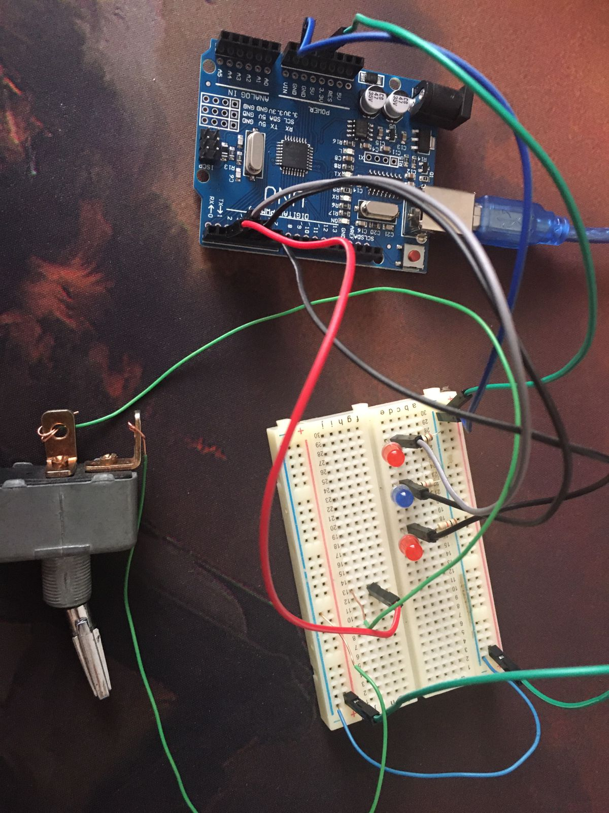

Interrupciones en Arduino
son un mecanismo que permite que ciertos fragmentos de código se ejecuten de manera inmediata en respuesta a un evento externo o a una condición específica, sin tener que esperar a que se complete la ejecución del programa principal. Esto es particularmente útil en situaciones en las que el microcontrolador Arduino necesita responder rápidamente a eventos externos, como cambios en un pin de entrada.
Interrupciones en arduino con sensor PIR
PROYECTO TINKERCAD:
Video:
CONCLUSIÓN:
las interrupciones en Arduino son una herramienta fundamental para manejar eventos o señales externas de manera eficiente y precisa. Permiten que el microcontrolador de Arduino responda de inmediato a cambios en pines específicos, sin necesidad de un monitoreo constante en el programa principal